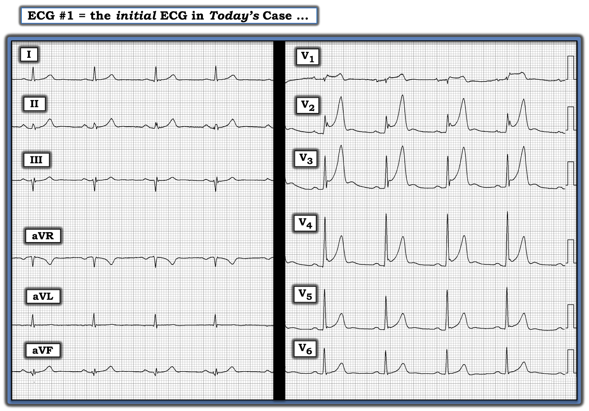
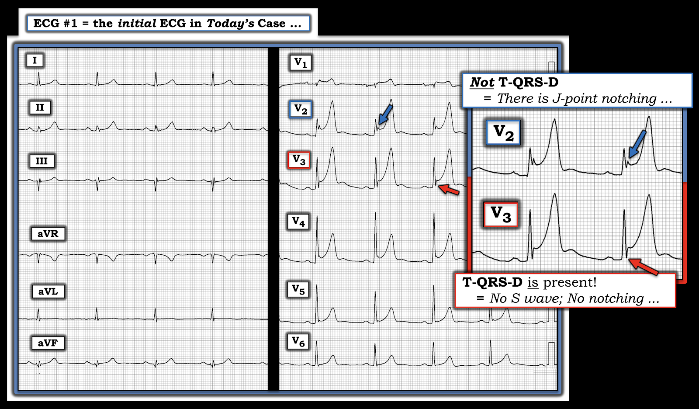

ECG Blog #318 — Đột quỵ nhưng không đau ngực (TQRSD)
Điện tâm đồ ở Hình-1 — được ghi ở một người đàn ông 65 tuổi nhập viện vì yếu nửa người, khởi phát từ vài ngày trước. Không đau ngực. Huyết động ổn định. Các triệu chứng đột quỵ của ông đã ổn định vào thời điểm ghi điện tâm đồ này.
- Với bệnh sử lâm sàng này — BẠN sẽ diễn giải điện tâm đồ ở Hình-1 như thế nào?
- Vượt ra ngoài phần cốt lõi: T-QRS-D là gì?


SUY NGHĨ CỦA TÔI về điện tâm đồ ở Hình-1:
Nhịp ở điện tâm đồ #1 — là nhịp chậm xoang (sinus bradycardia) với tần số ngay dưới 60/phút. Tất cả các khoảng (PR, QRS, QTc) đều bình thường. Trục mặt phẳng trán bình thường, ở +10 độ. Không có lớn buồng tim.
Về Thay đổi Q-R-S-T:
- Không có sóng Q đáng kể. Ở chuyển đạo III và aVF — ta thấy một hiện tượng thú vị: một sóng Q lớn và rộng có hiện diện ở nhát thứ 3 trong các chuyển đạo này — nhưng không có sóng Q ở các nhát thứ 1, 2 và 4 trong các chuyển đạo này. Thay vào đó — ta thấy một phức bộ nhiều pha (tức là, phân mảnh) với một biến thiên đầu tiên dương (sóng r).
- Chuyển đạo III và aVF "nhìn lên" tim từ góc nhìn của cơ hoành — và vì vậy đôi khi chịu kiểu biến đổi hình dạng QRS này do cử động của cơ hoành. Về mặt lâm sàng — tôi diễn giải sự biến đổi hình dạng QRS mà ta thấy ở 2 chuyển đạo này trong Hình-1 là cho thấy không có sóng Q đáng kể.
- Về tăng tiến sóng R (R wave progression) — Vùng chuyển tiếp xảy ra sớm, với sự xuất hiện đột ngột một phức bộ QRS hoàn toàn dương ngay từ chuyển đạo V2.
- Dấu hiệu đáng chú ý nhất ở điện tâm đồ #1 — liên quan đến các sóng T rất cao và nhọn ở các chuyển đạo trước ngực. Các sóng T này cao vượt hẳn sóng R tương ứng ở chuyển đạo V2 và V3. Sóng T vẫn nhọn một cách không tương xứng ở nhiều chuyển đạo khác. Ví dụ — sóng T ở các chuyển đạo chi II và aVF có biên độ gần gấp đôi sóng R rất nhỏ ở các chuyển đạo này.
- Ngoài sóng T nhọn — còn có điểm J-ST chênh lên đáng kể ở nhiều chuyển đạo. Rõ nhất ở chuyển đạo V2 và V3 (đạt tới 3 mm!) — nhưng cũng đáng kể ở chuyển đạo V1 và V4, và có ở mức độ nhẹ hơn ở chuyển đạo V5. Xét đến việc phức bộ QRS ở chuyển đạo V1 nhỏ đến mức nào — thì đoạn ST chênh lên rất rõ.
- Cuối cùng — có sóng U (U wave) chưa rõ ý nghĩa ở các chuyển đạo V2 đến V5.
NHẬN ĐỊNH:
Dù không có đau ngực — mối lo ngại hiển nhiên khi diễn giải điện tâm đồ #1 — là liệu các dấu hiệu ST-T này có cho thấy một biến cố tim gần đây (và có thể vẫn còn đang diễn tiến cấp tính) hay không:
- Sóng T ở các chuyển đạo trước ngực giống sóng T deWinter xét về vị trí ở chuyển đạo trước ngực — và kích thước khổng lồ thực sự mà một số sóng T này đạt tới. Trong mô tả gốc của deWinter và cs. trên NEJM về dấu hiệu điện tâm đồ này (Xem ECG Blog #183 để biết chi tiết) — các sóng T cao, nhọn thể hiện một "hình ảnh tĩnh" (static pattern) cho thấy hẹp mức độ nặng hoặc tắc LAD, tồn tại cho đến khi đạt được tái tưới máu. Điều này có thể giải thích sự tồn tại của các thay đổi ST-T thấy ở điện tâm đồ #1, vốn được ghi gần một tuần sau khi khởi phát triệu chứng đột quỵ.
- Tuy vậy — hình ảnh sóng T ở Hình-1 khác với hình ảnh thường thấy của sóng T de Winter, ở chỗ không có điểm J-ST chênh xuống ở bất kỳ chuyển đạo nào có sóng T cao, nhọn. Thay vào đó — có ST chênh lên rõ rệt ở một số chuyển đạo này.
- Dù rõ ràng cần kiểm tra K+ huyết thanh — hình ảnh ST-T ở Hình-1 không gợi ý nhiều đến tăng kali máu (hyperkalemia), vì có ST chênh lên và vì đáy của nhiều sóng T nhọn rộng hơn mong đợi so với tăng kali máu đơn thuần.
- ĐIỀU CỐT LÕI: Với bệnh sử triệu chứng đột quỵ khởi phát nhiều ngày trước khi ghi điện tâm đồ ở Hình-1 — tôi thấy khó biết nên diễn giải bản ghi này thế nào (đặc biệt khi không có đau ngực). Đánh giá tốt nhất của tôi là các thay đổi ST-T đáng chú ý ở điện tâm đồ #1 thể hiện sóng T kiểu de Winter (deWinter-like) — với yêu cầu phải giả định một biến cố tim cấp gần đây (hoặc vẫn đang diễn tiến) cho đến khi chứng minh được điều ngược lại.
Một Dấu hiệu Điện tâm đồ Cuối cùng cần Xem xét = T-QRS-D!
Khái niệm Terminal QRS Distortion (T-QRS-D) — biến dạng phần cuối QRS — là điều tôi chưa từng biết trước khi tích cực tham gia với vai trò Phó Tổng biên tập (Associate Editor) của Dr. Smith's ECG Blog. Từ đó, tôi đã gặp nhiều ca bệnh xác nhận giá trị lâm sàng của dấu hiệu điện tâm đồ này, vốn được BS Stephen Smith cổ vũ. Khi có mặt — T-QRS-D có thể hỗ trợ vô giá trong việc phân biệt giữa biến thể tái cực (repolarization variant) với OMI cấp (tức là, Khi có T-QRS-D thực sự ở một bệnh nhân có triệu chứng mới — thì gần như chẩn đoán OMI cấp = nhồi máu cơ tim do tắc (Occlusion-based Myocardial Infarction)). Tôi minh họa dấu hiệu điện tâm đồ T-QRS-D ở Hình-2 bên dưới, được trích từ Bình luận của tôi trong bài ngày 14 tháng 11 năm 2019 trên Dr. Smith's ECG Blog. Để ôn lại:
- T-QRS-D — được định nghĩa là không có cả sóng J lẫn sóng S ở một trong hai chuyển đạo V2 hoặc chuyển đạo V3. Dù định nghĩa đơn giản — dấu hiệu này có thể rất kín đáo! Tôi hoàn toàn thừa nhận rằng tôi đã mất một thời gian mới trở nên thoải mái và tự tin khi nhận ra nó.
Một bức tranh đáng giá hơn 1.000 lời nói. Tôi đã lấy các ví dụ ở chuyển đạo V3 trong Hình-2 từ những ca trước đây đã đăng trên Dr. Smith’s ECG Blog:
- PHÍA TRÊN trong Hình-2 — Dù ST chênh lên rõ ở chuyển đạo V3 này — đây không phải T-QRS-D, vì có khía ở điểm J (mũi tên XANH) rõ ràng. Bệnh nhân này có biến thể tái cực là nguyên nhân gây ST chênh lên.
- PHÍA DƯỚI trong Hình-2 — Đây là T-QRS-D, vì ở chuyển đạo V3 này không có khía ở điểm J — và không có sóng S (mũi tên ĐỎ cho thấy biến thiên cuối cùng của QRS không bao giờ đi xuống dưới đường đẳng điện).

Có T-QRS-D ở Hình-1 không?
Hãy quay lại điện tâm đồ ban đầu trong ca hôm nay, được trình bày ở Hình-1. Nhìn lại một lần nữa các sóng ST-T ở chuyển đạo V2 và V3.
- Có T-QRS-D ở một trong hai chuyển đạo này không?
TRẢ LỜI:
Để cho rõ, ở Hình-3 — tôi đã phóng to và ghi nhãn các phức bộ QRST ở chuyển đạo V2 và V3 từ bản ghi hôm nay.
- Ở Chuyển đạo V2: ST chênh lên không phù hợp với T-QRS-D — vì có khía rõ ở điểm J (mũi tên XANH).
- Ở Chuyển đạo V3: Có T-QRS-D — vì không có khía ở điểm J — và không có sóng S (mũi tên ĐỎ cho thấy biến thiên cuối cùng của QRS không bao giờ đi xuống dưới đường đẳng điện).
ĐIỂM THEN CHỐT (PEARL) #1: Nhìn chung, theo kinh nghiệm của tôi — T-QRS-D không phải là dấu hiệu thường gặp ở bệnh nhân tắc động mạch vành cấp. Tuy vậy — giá trị tiềm năng của dấu hiệu này khi nó có mặt là không thể bàn cãi (như đã thấy trong ca hôm nay, khi dấu hiệu điện tâm đồ này ủng hộ mạnh mẽ cho nhồi máu gần đây).


Tổng Hợp Lại Toàn bộ:
Dù việc không có đau ngực khiến khó xác định thời điểm diễn ra các biến cố trong ca hôm nay — các sóng T kiểu de Winter ấn tượng ở các chuyển đạo trước ngực của điện tâm đồ #1, đi kèm với T-QRS-D thấy ở chuyển đạo V3 — gợi ý cho tôi cần phải giả định tắc LAD gần đây gây nhồi máu cho đến khi chứng minh được điều ngược lại.
- Nhồi máu xảy ra trước đột quỵ hay không (có lẽ là nguyên nhân gây đột quỵ) — thì chưa chắc chắn, với những thông tin hạn chế đã biết.
- Tuy vậy — ca hôm nay có lẽ là một ví dụ sâu sắc về nhồi máu cơ tim (MI) "thầm lặng" (tức là, không đau ngực) — và MI này chỉ được nhận ra vì bệnh nhân bị đột quỵ (Xem ECG Blog #228).
DIỄN TIẾN CỦA CA BỆNH:
Tiếc là — thông tin theo dõi của ca hôm nay khá hạn chế. Những gì có thể nói là: i) K+ huyết thanh tại thời điểm ghi điện tâm đồ ban đầu không tăng; và, ii) Các bất thường điện tâm đồ mô tả ở trên đã được nhận ra kịp thời — vì vậy bệnh nhân đã được Thông tim. Kết quả cho thấy bệnh 3 nhánh mạch vành với các dấu hiệu cụ thể sau:
- LMain (thân chung động mạch vành trái — Left Main coronary artery) — có xơ vữa, nhưng không có tổn thương đáng kể.
- LAD (động mạch liên thất trước — Left Anterior Descending) — tổn thương nối tiếp (tandem lesion) 80-90%, kéo dài từ đoạn gần LAD đến đoạn giữa LAD. Dòng chảy TIMI = Độ 2 đến 3 (tức là, dòng chảy một phần) — gợi ý rằng đã từng có tắc nghẽn (và rằng đoạn gần LAD chính là động mạch "thủ phạm") — nhưng mạch này đã tự phát tái tưới máu. Tổn thương nối tiếp này đã được đặt stent thành công.
- ĐIỂM THEN CHỐT (PEARL) #2: Ca này minh họa cách giả định đã xảy ra một nhồi máu gần đây dù không có tắc 100% động mạch vành vào thời điểm thông tim. Đối chiếu lâm sàng giữa thời điểm xuất hiện triệu chứng với giá trị troponin và các điện tâm đồ liên tiếp — cùng với việc nhận thức được tái tưới máu tự phát xảy ra phổ biến đến mức nào — là MẤU CHỐT để đưa ra nhận định này.
- LCx (động mạch mũ trái — Left Circumflex) — tổn thương nối tiếp 70-80%, kéo dài từ đoạn gần LCx đến đoạn giữa của mạch này. Dòng chảy mạch vành bình thường (tức là, TIMI Độ 3) — và LCx không được coi là mạch "thủ phạm". Can thiệp mạch vành qua da (PCI) LCx được hoãn lại trong thời gian tới.
- RCA (động mạch vành phải — Right Coronary Artery) — hẹp đoạn gần 60-70% — nhưng dòng chảy bình thường ( = TIMI Độ 3). Mạch này được đánh giá là không cần đặt stent.
- Để ôn nhanh về Phân độ dòng chảy TIMI —> TRUY CẬP — Sarkar et al: Stat Pearls, NIH, 2022.
==================================
Lời cảm ơn: Ca này được gửi ẩn danh cho tôi để sử dụng trên ECG Blog của tôi.
==================================
Các bài ECG Blog liên quan đến ca hôm nay:
- ECG Blog #205 — Ôn lại Cách tiếp cận hệ thống của tôi trong đọc điện tâm đồ 12 chuyển đạo.
- ECG Blog #183 — Ôn lại khái niệm Sóng T deWinter (kèm theo hình minh họa trích từ bài báo gốc của deWinter trên NEM).
- ECG Blog #218 — Ôn lại CÁCH xác định một sóng T là Tối cấp?
- ECG Blog #230 — Ôn lại CÁCH so sánh các Điện tâm đồ Liên tiếp (tức là, "Bạn đang so Táo với Táo hay với Cam?").
- ECG Blog #193 — Ôn lại lý do vì sao thuật ngữ “OMI” ( = nhồi máu cơ tim do tắc — Occlusion-based MI) nên thay thế thuật ngữ quen thuộc hơn là STEMI — và — ôn lại những điều cơ bản về cách dự đoán động mạch "thủ phạm".
- ECG Blog #194 — Ôn lại cách nhận biết LIỆU động mạch “thủ phạm” (tức là, bị tắc cấp) đã được tái tưới máu hay chưa, dựa trên dữ kiện lâm sàng và điện tâm đồ.
- ECG Blog #228 — Ôn lại khái niệm MI "Thầm lặng".
- ECG Blog #215 — Ôn lại một ca có T-QRS-D.
- Bài ngày 14 tháng 11 năm 2019 trên Dr. Smith’s ECG Blog (Vui lòng cuộn xuống CUỐI trang để xem Bình luận của tôi và phần minh họa hiện tượng T-QRS-D = biến dạng phần cuối QRS (Terminal QRS Distortion)).